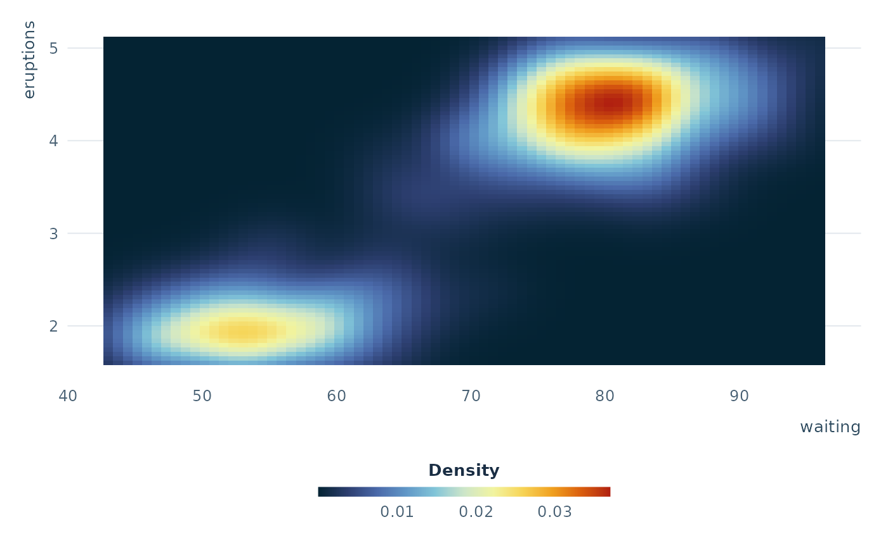

Horizontal colourbar guide
guide_colourbar_h.RdReturns a ggplot2::guide_colorbar() pre-configured as a thin horizontal
bar, styled similarly to matplotlib's default colorbar. Intended for use
with continuous fill or color scales via the guide argument or
ggplot2::guides().
Arguments
- title
Character or
ggplot2::waiver(). Guide title. Defaultggplot2::waiver()(inherits from scale name).- barwidth
A
grid::unit()object controlling the bar width. Defaultgrid::unit(12, "lines").- barheight
A
grid::unit()object controlling the bar height. Defaultgrid::unit(0.4, "lines").- title_position
Character. Where to place the title relative to the bar. One of
"top","bottom","left","right". Default"top".- title_hjust
Numeric in
[0, 1]. Horizontal justification of the title. Default0.5(centered).- label_position
Character. Where to place tick labels. One of
"top","bottom". Default"bottom".- ...
Additional arguments passed to
ggplot2::guide_colorbar().
Examples
library(ggplot2)
ggplot(faithfuld, aes(waiting, eruptions, fill = density)) +
geom_tile() +
scale_fill_obis_cont("thermal") +
guides(fill = guide_colourbar_h(title = "Density")) +
theme_obis(legend_position = "bottom")
